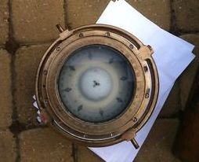

Dear Rogainer,
In this newsletter:
• Next major event - Mt Outdoors Lindis
Rogaine
• From the Association’s AGM in February
• Heights of Winter – call for volunteers
• World Rogaining Championships Survey
• Upcoming Events
• Recent Results
• Championships coming up – World, Australasian, and
NZ
Mt Outdoors Lindis Rogaine
Lindis Valley, Saturday 26th April
The Highland Events (Ed Stevens and Terry Davis) autumn
Rogaine will be based at the Shirlmar Station woolshed, Goodger Road in
the Lindis Valley. The course will also take in the Morven Hills and
Geordie Hills stations. The terrain on these fine wool sheep
stations
is similar to last autumn’s Timburn Rogaine and will be fantastic for
beginners and elites alike. There is a very good track system through
the properties for the Mountain Bike event too. Entries for the 12hr,
6hr and family 3hr events, and a 6hr MTB option are open on the Highland Events website.
From the Association’s AGM in
February
by Secretary, Grant Hunter
Two
interlinked features took us beyond the routine. Peter
Squires resigned as President, making way for Mondo Kopua
to be elected. This contributes to review and rejuvenation as the
Association moves from a position of formation, growth and
consolidation into looking at its future role.
Secondly, the AGM considered how NZRA might function in the future. It
acknowledges that many groups, individuals and commercial entities
stage rogaines, and its own role is largely one of support and
information sharing, as well as ensuring that NZ meets international
standards for competition. It also recognises that its own ‘reach’ is
quite variable around the regions. Two possibilities will be explored:
(1) forming a regional branch structure and (2) forming stronger
relationships with orienteering. We will be welcoming your views
and
participation on these.
Bios
NZRA acknowledges Pete Squires’ massive and multi-dimensional
contribution to rogaining. Pete motivated the founding of the NZ
Rogaining Association in 2002 and has been its President since. The
Association has sought to help promote, facilitate and support
rogaining across the country and ensure its recognition as an
independent and distinctive navigation sport. Pete also served as our
NZ representative on the International Rogaine Federation for many
years. In 2008 the IRF awarded him for services to international
rogaining.
Pete (usually with his team of ‘oldies’, i.e., Bill and Anne Kennedy)
has competed with regular podium distinction in most World and
Australian Champs events, and competed in or co-organised all NZ
Champs. Of more practical interest, Pete is the designer/developer and
manufacturer of the electronic scoring system Navlight. Although he has
stepped aside as President, thankfully there’s no sign of Pete further
retreating from the rogaining scene any time soon.
Mondo Kopua brings a fresh wave of enthusiasm and ideas to help
guide the future of the Association, and rogaining in general.
Established as an orienteer and rogainer, he regularly participates in
short to championship-length events throughout NZ and has participated
in Australian and World Champs. He has organised, co-organised and
vetted NZ Championship rogaines, and organises regional events in
home-town Marlborough. Mondo has a sound grasp of the challenges and
opportunities for rogaining at scales ranging from local to regional.
He actively communicates on these and we look forward to his
presidency.
Heights of Winter – call for volunteers
Organising Heights of Winter, 14th June in North
Canterbury, is underway. Douglas Wood (douglas@black-woods.co.nz)
and Colin Dixon (colinchris@xtra.co.nz)
are leading course planning and Grant Hunter (g.hunter@clear.net.nz) the
logistics and community links. They need support, ranging from field
work to help on the day with tasks such as registration and at the
start and finish, so please call them with your offer of assistance.
There will also be an opportunity to learn how to operate the
electronic scoring system Navlight (from an event management
perspective) if you would like to add this to your really useful set of
rogaining skills. If you are in doubt about the satisfaction gained
from organising versus competing in rogaines read what
motivates Grant.
World Rogaining Championships Survey
The International Rogaining Federation is conducting a
survey of past and future participants in the World Rogaining
Championships (WRCs) in order to assess the major factors which attract
competitors to the event, to gauge opinion on the regional
rotation policy, and to get feedback on the preferred frequency of
WRCs. The intention is to distribute the survey internationally to as
many past and future participants as possible. If you have competed in
WRCs in the past, or intend to in future, please take part in this
short survey:
https://docs.google.com/forms/d/1ngEFDvMhHRAoJDFlc5lFFdQ5iJxwRCbmO6WS3BEZehg/viewform
Secondary School Rogaining
Once
again the annual Taranaki Secondary Schools Rogaine,
organised by Annie Sanderson and Nick Collins and others, broke all
records with 954 students competing at Lake Mangamahoe in three age
categories and the three gender categories of girls, boys and mixed.
The event ran from 6pm to 9pm giving the students dark zone experience
and the chance to play with their torches. Read Nick’s
entertaining account of the stresses in organizing this event and
handling 954 fired-up students. NZRA supports this event by providing
the Navlight scoring system.
The success of the Taranaki
Secondary School Champs has
encouraged O Bay of Plenty to organise a New Zealand Secondary
School Championship. The inaugural event will be run in conjunction
with the Great Forest Rogaine in the Whakarewarewa Forest, Rotorua on
9th August and will feature Senior 4hr and Junior 3hr mixed, male and
female categories. If you know of a school wishing to partake the
person to contact is Erin Swanson at erinroberts08@gmail.com.
Upcoming Events
R&R Sport Wicked Autumn Series, Christchurch, Wednesday 9th April
The first
event in this 2hr afterwork rogaine series was run
in the Port Hill’s Bowenvale Valley on 26th March. The next event on
9th April will be based at Barnett Park and will include a 1hr Family
event. See the Wicked
Facebook for further information, and results from 26th March.
Welly Afterwork Rogaine Series, Wellington, from 15th April
These monthly
3hr afterwork events will be run in the
Wellington region again this year, from 15th April through to 11th
November except for June and July. If any non-Wellingtonians happen to
be visiting Wellington on business, or for any other reason, you are
sure to be welcome to join the locals. For more information see the Welly Rogaine website.
Auckland Rogaine Series from 4th May
Four 90min Sunday events in
the Auckland region are scheduled
with the first on 4th May. These are organised by the North West
Orienteering Club. There are 3 new venues for this year’s series. For
more information see the event
website.
A 3hr Rogaine near Blenheim is scheduled for Sunday 4th May.
Details will be available shortly on the Marlborough Orienteering Club
website.
T'Walk 2014, Canterbury, Saturday 17th May
On yet
again!! This will be the 48th running of this iconic
event, organised by the University of Canterbury Tramping Club, the
pioneer of long distance foot navigation events in NZ. It differs from
a Rogaine in that the order of checkpoint visits is somewhat
predetermined. This year T'Walk is two days after the full moon so will
be magic if the night is clear. See the T'Walk website for details.
Entries open Monday 28th April and close Monday 12th May.
A special
shout-out from organiser Sharon (twalk@cutc.org.nz),
“if
you're still holding on to the misplaced original trophy from way back
in the day, please let me know!” So what is this misplaced
trophy? It is a brass binnacle compass which was donated to T’Walk by
Pete Squires. 
It has been missing for 15yrs or more. The compass body is
the order of 100mm in diameter and it is mounted on a wooden stalk for
carrying. Unfortunately we don’t have a picture of the actual compass
but it is somewhat similar to the one shown here. It could be in a
wooden carry-case of dimensions something like 120mm x 120mm x 250mm
high.
For a
short history and comment on T’Walk by one who was on
the first, and is still doing them 48 years later, see Pete’s
Twalk Observations on the NZRA website.
Metlink City Safari, Wellington, Sunday 18th May
In the City Safari teams will be racing by foot, train,
bus, cable car or ferry to find checkpoints spread at unique and
interesting spots throughout the Wellington region. The course has been
designed to reward smart use of public transport which adds a whole new
level of strategy. Live scoring will enable you to know how you are
doing during the event (using your smartphone), and friends and family
will be able to watch your progress from a big screen at the start
finish line. There will be 3hr and 6hr options. For more detail see www.citysafari.org.nz.
Event Calendars
Keep your eye on:
1. the NZRA website event calendar at http://www.rogaine.org.nz/ and
2. the Maptalk website, http://www.maptalk.co.nz/events/default.cfm?t=Rogaine
for details of future rogaines.
Recent Results
There has been a lot of Rogaine activity in the last month with a mix
of new and experienced organisers running events. Of particular
interest were the unique formats of Equestrian and Boulder rogaines.
First there was the Suburbs
to Surf in Dunedin
organised by rookie organiser Tim Jowett on 2nd March. Despite prior
indications of more attendees only 35 people turned up on the day.
(There is a rumour that a large group of students who intended to front
were waylaid by one of the infamous Dunedin parties). But with lots of
positive feedback we expect attendance to grow in future versions of
this event – results.
Stuart Payne and Carol
Fowler organised another Equestrian
Rogaine, Sunday 9th March, in the Canterbury foothills and they
added in a short foot rogaine to further utilise the course. There were
36 horses and riders in the equestrian event (results)
and about 50 in the foot (results).
On a gloriously fine day in
the Canterbury foothills the
world-first Bouldergaine (Saturday 15th March) was a roaring
success with about 150 people enjoying the unique area that is the
Castle Hill boulder field. See the event website for a report
and pictures.
The first of this year’s autumn Wicked
Series was based
at the foot of Bowenvale Valley, Port Hills, Christchurch. Take a look
at the Wicked
Facebook for results and a nice picture of the second placed Womens
team having fun.
Finally, the inaugural Autumn
Muster rogaine in support
of the Geraldine High School was a great success. Organiser Mike
Harding reports “More than 160 participants including lots of
families and children, so a great success. Will probably run another
one next year”. Take a look at the results
for the 3 and 4½ hr events.
Championships coming up
12th World Rogaining Championships
Black Hills, South Dakota, 16th - 17th August 2014
As
noted in previous newsletters there are many places
still available.
The current total of 411 is well short of the 1000 limit. To date 31
Kiwis have registered their interest but we expect a few more once they
get themselves sorted. If you are wondering what to expect read the
article by Bud Laird on Rogaining
in S. Dakota. The event website and
blog is at http://peakassurance.net/. See
the list
of entrants.
Australasian Championships (Goldfields Bonanza)
Victoria, Sat-Sun 11th - 12th October 2014
Set in an
old goldfields area in the Castlemaine region, the
terrain is a complex and challenging mixture of spurs and gullies only
1.5hrs drive from Melbourne. There will be a 6hr event as well as the
championship 24hr Rogaine. The website is at
http://vra.rogaine.asn.au/arc14/.
New Zealand Championships
Nevis Valley, Otago, Sat-Sun 6th - 7th December 2014
The 2014 New
Zealand Champs will be based in the lower Nevis
Valley with its unique landscapes and historic remnants of the gold
mining era. This interesting valley is quite remote but is readily
accessible in summer; Google “Nevis Valley” for a glimpse of what the
area offers. Chief organisers are the experienced Highland Events team
of Ed Stevens and Terry Davis who are well known for their twice yearly
Wanaka Rogaines. Mark the date in your calendars and look for more
information on the NZRA website
further down the track.
That is it for now. Happy Rogaining,
Regards,
NZRA (http://www.rogaine.org.nz/)